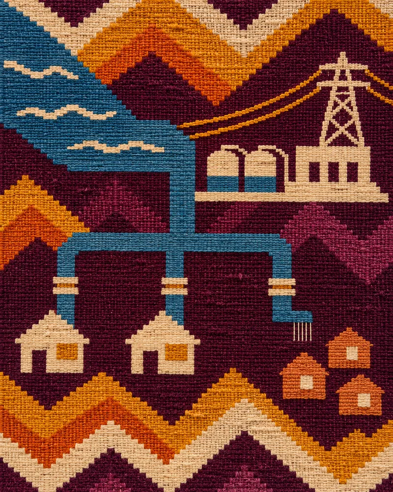

The unexpected age of abundance
Imagine 2040. After a flood, a municipal workshop makes replacement pump parts locally from a shared design. The water utility can run its treatment works cheaply through the night. Across the municipal boundary, families still buy water by the container because their settlement has no pipe connection.
How this could happen
In this future, cheap clean power, AI-assisted discovery of materials and flexible manufacturing lower the energy, labour and transport required for selected essentials. Open licences help some producers copy successful designs.
Who gains and who could lose
Places with grids, workshops and purchasing power can turn lower production costs into reliable services. Where land, finance or patents are concentrated, the savings can accrue to owners while households remain excluded.
Early signs
Look for falling delivered costs and working local production across several sectors. Compare those gains with connection rates, household bills and ownership of the productive assets.